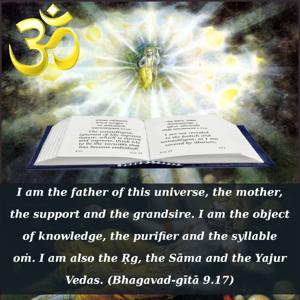
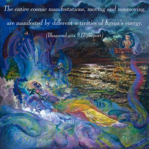
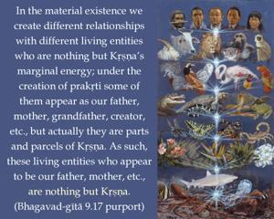
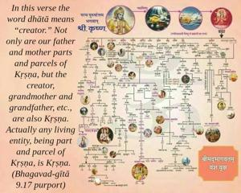

I am the father of this universe, the mother, the support and the grandsire. I am the object of knowledge, the purifier and the syllable oṁ. I am also the Ṛg, the Sāma and the Yajur Vedas.




The entire cosmic manifestations, moving and nonmoving, are manifested by different activities of Kṛṣṇa’s energy. In the material existence we create different relationships with different living entities who are nothing but Kṛṣṇa’s marginal energy; under the creation of prakṛti some of them appear as our father, mother, grandfather, creator, etc., but actually they are parts and parcels of Kṛṣṇa. As such, these living entities who appear to be our father, mother, etc., are nothing but Kṛṣṇa. In this verse the word dhātā means “creator.” Not only are our father and mother parts and parcels of Kṛṣṇa, but the creator, grandmother and grandfather, etc., are also Kṛṣṇa. Actually any living entity, being part and parcel of Kṛṣṇa, is Kṛṣṇa. All the Vedas, therefore, aim only toward Kṛṣṇa. Whatever we want to know through the Vedas is but a progressive step toward understanding Kṛṣṇa. That subject matter which helps us purify our constitutional position is especially Kṛṣṇa. Similarly, the living entity who is inquisitive to understand all Vedic principles is also part and parcel of Kṛṣṇa and as such is also Kṛṣṇa. In all the Vedic mantras the word oṁ, called praṇava, is a transcendental sound vibration and is also Kṛṣṇa. And because in all the hymns of the four Vedas – Sāma, Yajur, Ṛg and Atharva – the praṇava, or oṁ-kāra, is very prominent, it is understood to be Kṛṣṇa.